Aluminium Camlock Type A, Male Adapter × Female Thread
Sizes½" – 6"
- BSPT
- NPT
Couplings & Connectors · 17 products
Cam and groove couplings by type: adapters, couplers, caps, plugs, doubles and reducers in aluminium, brass and PP. Ask Fakhri Tools for a quote on WhatsApp, by phone or at our trade counter in Al Quoz Industrial Area 3.
Sizes½" – 6"
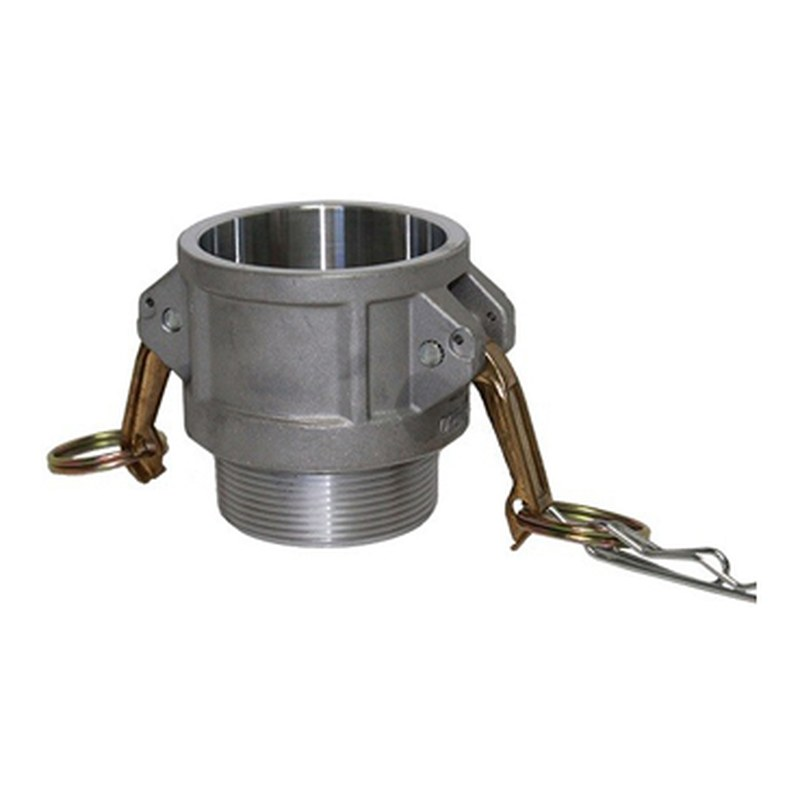
Sizes½" – 6"
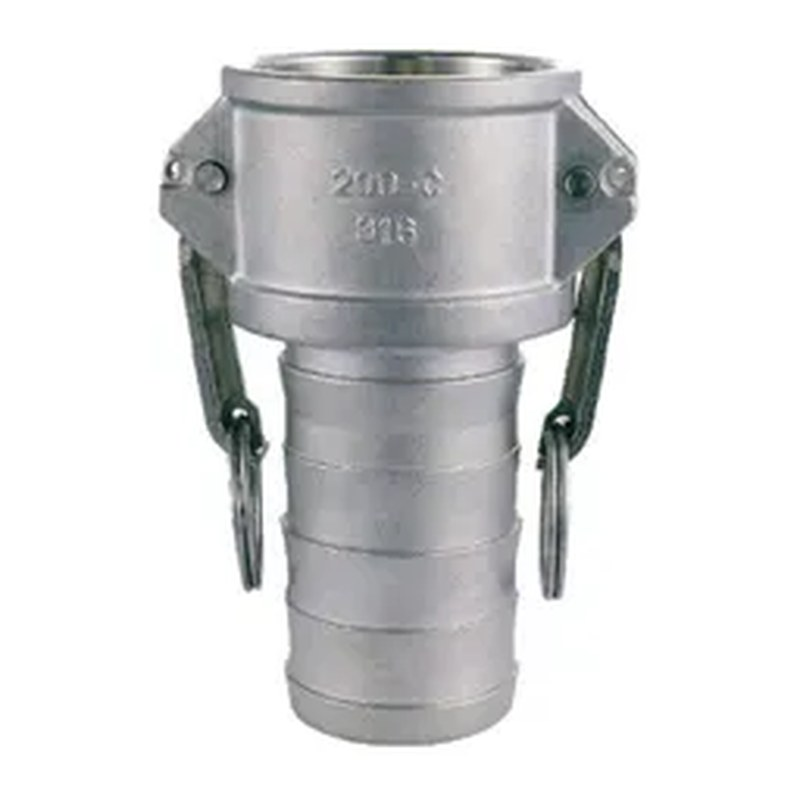
Sizes½" – 6"
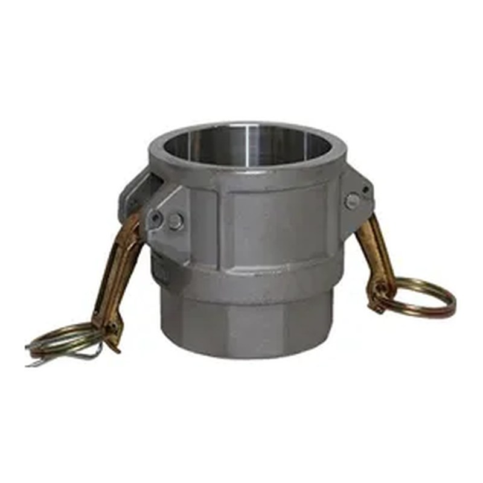
Sizes½" – 6"
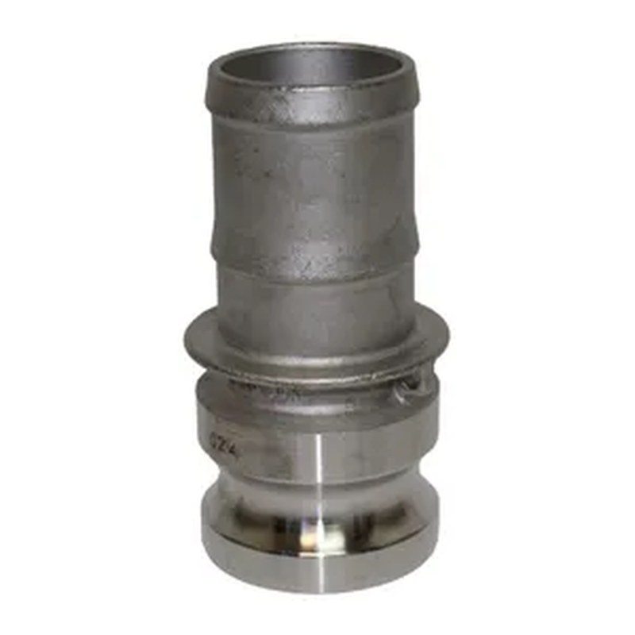
Sizes½" – 6"
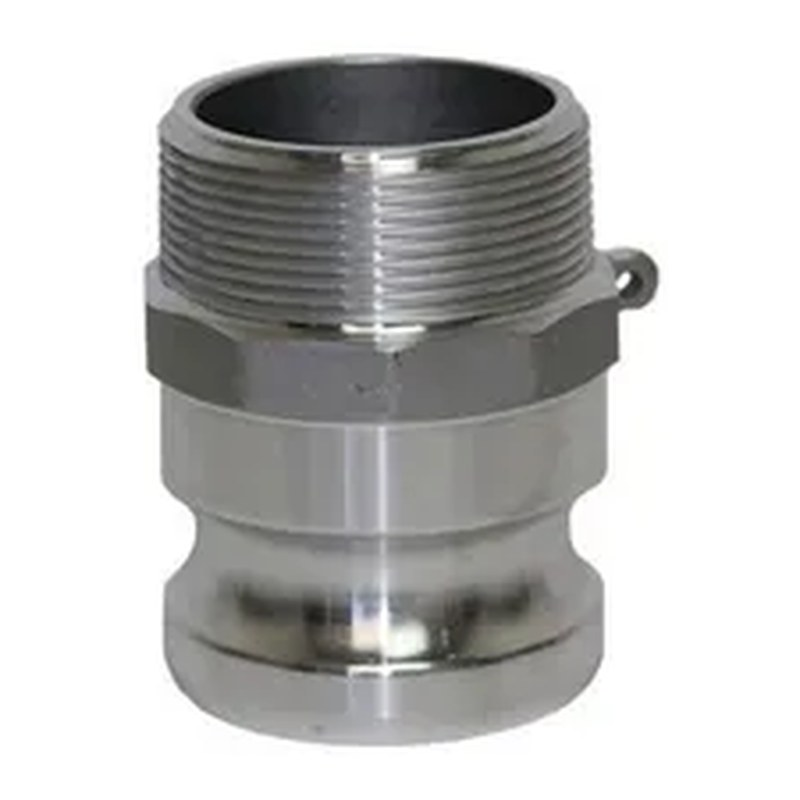
Sizes½" – 6"
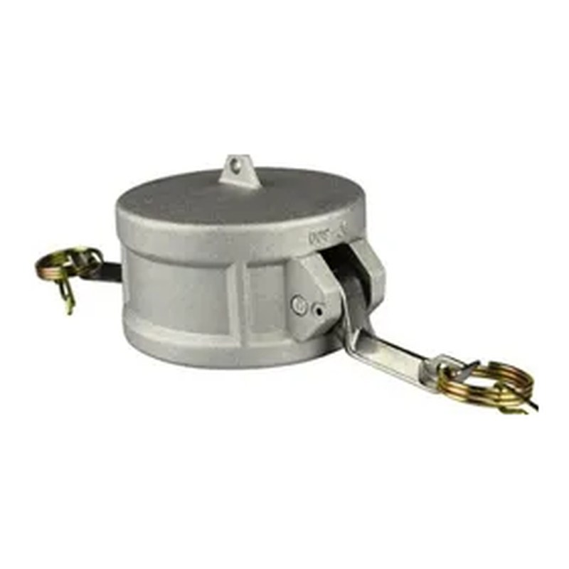
Sizes½" – 6"
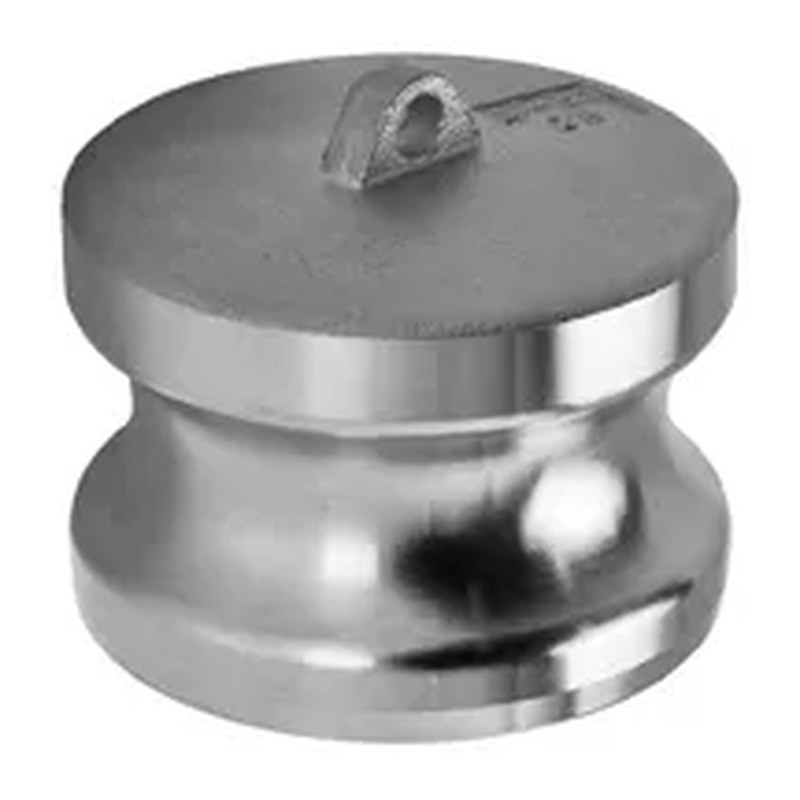
Sizes½" – 6"
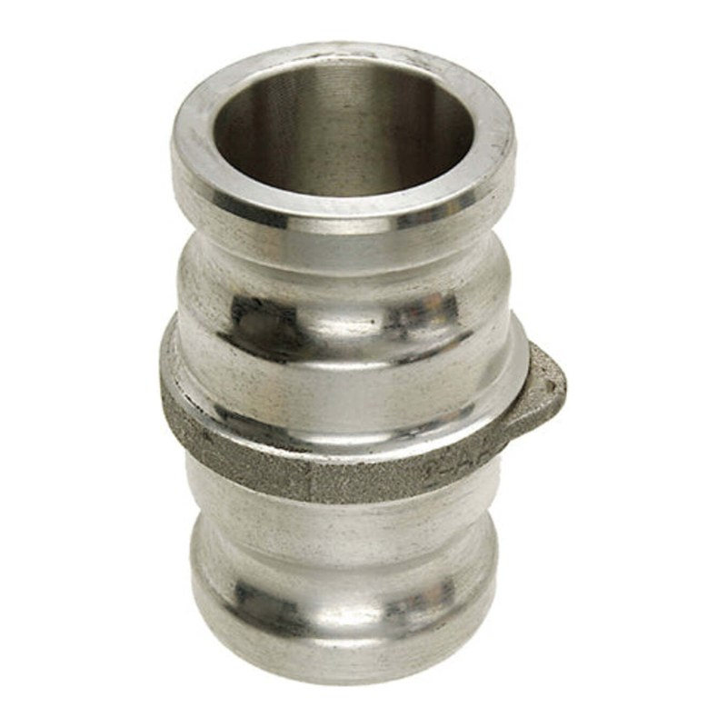
Sizes1" – 4" × 3"
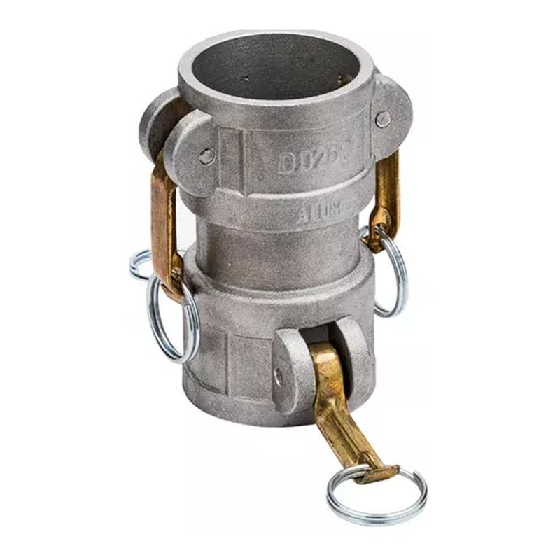
Sizes1" – 4" × 3"
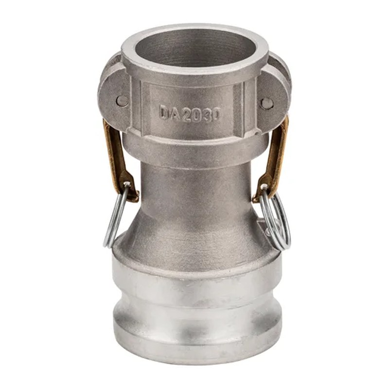
Sizes2" × 1½" – 6" × 4"

Sizes3" × 2" – 3" × 4"

Sizes2" × 1½" – 3" × 2"
Sizes6" × 4"
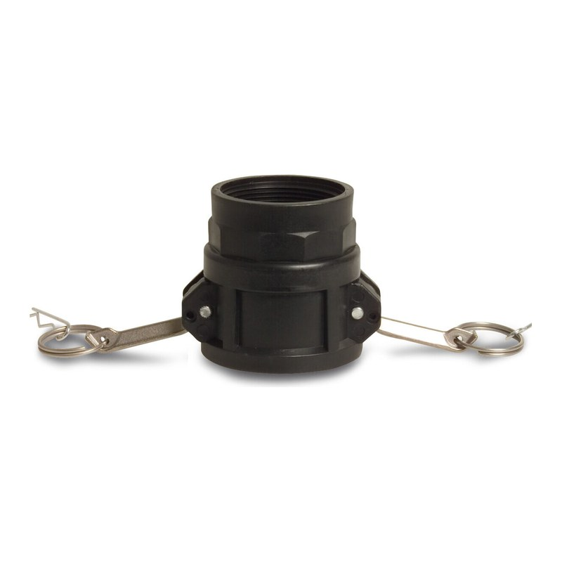
Sizes3"
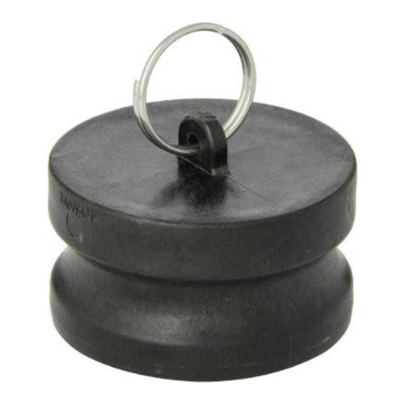
Sizes3"
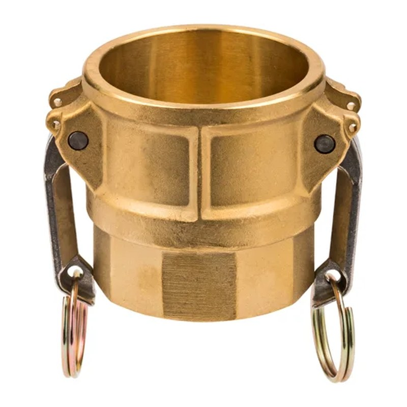
Sizes2"
Send a photo of it, or its nameplate, on WhatsApp and we will tell you if we have it.